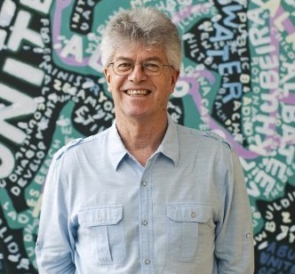
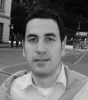
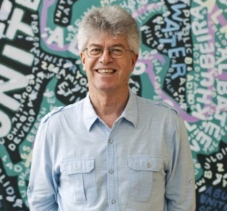
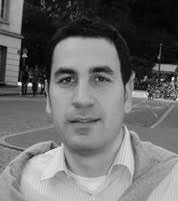
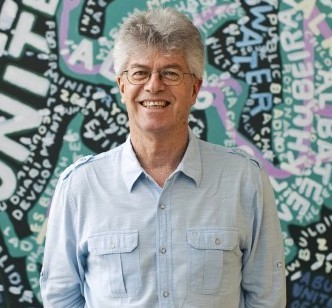
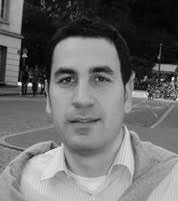

The Music and Sound Cultures (MaSC) research group is a collective of researchers focusing on the multidisciplinary study of music from the Gulf, the Levant, East Africa, and South India. These researchers represent a broad spectrum of expertise, including ethnomusicology, machine learning, music composition, performance and improvisation, library science, computational modeling, and the digital humanities. Having as a primary goal the study and dissemination of music from this region, the group currently hosts several projects that range from the preservation of collections of field or rare commercial recordings, to developing innovative ways of conducting musical heritage analysis, preservation, and dissemination.
Our collaborative engagement with fields including ethnography and field recording, cataloguing, computational analysis and re-synthesis — intersecting approaches from traditional and digital humanities with engineering and computer science —gives us a unique multidisciplinary lens for understanding, analyzing, and disseminating the musical heritage from this region. The different projects undertaken by the group ultimately aim at creating new ways of meaningfully interacting with music heritage, allowing scholars to browse large collections of music through their audible or structural characteristics, through the computational recreation of the musical styles using innovative software applications and through the intersection of musical heritage archival materials, including photos and recordings that could be lost to time if not preserved in perpetuity.

